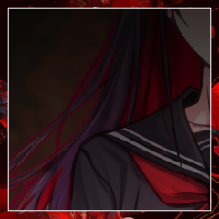

GM
＊1D99を振って数字の高い方から手番をやりましょう。

三ノ宮 炉
1d99 (1D99) ＞ 22
三ノ宮 炉
1d12 荒野シーン表を振ります (1D12) ＞ 4
三ノ宮 炉
4 崖に挟まれた道。こんな場所で奇襲を受ければ厄介な事になりそうだ。
GM
氷に封じ込められた世界からどうにか逃げ出し、冬を振り切って、
GM
辺鄙な村には貴重な地図。
比較的近くの、栄えた街への道筋が記されたそれを、馬の首に括り付けてくれていた。
GM
それに従って道をゆく。
食糧も水も、得るための手段はろくにない。
身体を清める術もなく、休むのには瓦礫の陰で風を凌いだ。
GM
二人ともろくに口に出せないまま、言葉少なに道を進んだ。
GM
村を出てより十日ほど。
気付けばダザックが堕落の国に落ちてから、
GM
あの救世主を殺してから、既に二十の日数が過ぎていた、その朝に。
三ノ宮 炉
砂に汚れた白い指先が、ごわごわの栗毛に触れていた。
GM
ここまで生き延びてこられたことが、そもそも奇跡でさえあった。
ダザック
馬を解体して食料にしたいところではあったが、それは憚られ、提案することはなかった。
GM
耐え難い空腹と喉の渇きに襲われている。
それでも命を繋いでいるのもまた、６ペンスコインの力によるものなのか。
GM
まるきり食わずとも生きていける、とは、流石に思わないが。
GM
自分たちが”救世主”と呼ばわれるだけの異形であることは、
意識せずにはいられない事実だった。
三ノ宮 炉
そう語った目の前の少女も、それを感じているのか。
三ノ宮 炉
土埃に汚れた白い頬からは、察せられない。
ダザック
あの時ヒューゴと呼ばれた馬に別れを告げて、一言も発せずに道を行く。
せめて雨でも降れば、多少渇きは潤せそうだが、その様子もない。乾燥している。
ダザック
地図を広げながら、何かがないかとつぶさに確認をする。どこかに集落や、そうでなくても建物があれば……
GM
かつては建物だったであろう、瓦礫の山だとか。
GM
何度地図を確認しても、辿り着く答えはひとつ。
GM
この地図の街に辿り着くのには、十日ほどの時間がかかる。
三ノ宮 炉
それを同じく理解しているはずの少女が、ふとあなたへと問いかける。
ダザック
「息をして、そこにいるから、生きていなきゃならない」
三ノ宮 炉
紅い蝶へと変化するあの術はしばらく見せていない。
あれはあれで、なんらかの力を消費するのか。
三ノ宮 炉
あなたに導かれるまま、あなたの背を追う形で。
ダザック
また無言になって、二人分の足音だけが響く。ざり、ざりと砂がなると、そのたびに気が重くなるかのようだ。
ダザック
過去形であったことには触れず。そう返した。
「俺には何もなかったな、そういうのは」
ダザック
「大層な夢を見て田舎から出てきて、必死で冒険者として生きていただけ。その結果がこの様だ」
ダザック
「……成れの果てといったほうがいいかもな」
ダザック
「夢見た末に腕を失って、それでもまだ生きていたから、仕方ない」
ダザック
「………」
足を止めて、炉を振り返り、その顔を見る。
三ノ宮 炉
あなたが告げたそれとは、かけ離れた笑顔で。
ダザック
炉に近づく。小さく細いその肩に触れる。
「うまくなんて、しなくていい」
ダザック
その震えるからだをそっと抱き寄せる。かわす言葉はなく、心音だけは感じられる。
三ノ宮 炉
＊手番の行動。
ダザックの心の疵『諦念』を才覚で抉ります。
ダザック
Choice[猟奇,才覚,愛] (choice[猟奇,才覚,愛]) ＞ 愛
ダザック
2d6+0=>7 判定（＋愛） (2D6+0>=7) ＞ 5[2,3]+0 ＞ 5 ＞ 失敗
三ノ宮 炉
2d6+3+2=>7 判定（＋才覚） (2D6+3+2>=7) ＞ 8[6,2]+3+2 ＞ 13 ＞ 成功
[ 三ノ宮 炉 ] ティーセット : 1 → 0
[ ダザック ] HP : 14 → 13
[ ダザック ] 諦念 : 0 → -1
ダザック
その声が確かに耳に届く。
あぁ、そうか、そうなのだろう。
三ノ宮 炉
きつく目を閉じて、身を強張らせている。
ダザック
「泣きたい時は、泣くといい。苦しかったらそう言っていい。我慢なんてしなくていいんだ。相手がだれであれ、世界であれ」
三ノ宮 炉
Choice[猟奇,才覚,愛] (choice[猟奇,才覚,愛]) ＞ 才覚
三ノ宮 炉
2d6+3=>7 判定（＋才覚） (2D6+3>=7) ＞ 2[1,1]+3 ＞ 5 ＞ 失敗
GM
PCがお茶会中の判定でファンブルを起こした場合、所持している小道具を1つランダムに失います。
失うべき小道具を1つも所持していない場合、キャラクターのHPを1D6点減少させます。
[ 三ノ宮 炉 ] HP : 14 → 10
[ 三ノ宮 炉 ] HP : 10 → 9
ダザック
2d6+3=>7 判定（＋才覚） (2D6+3>=7) ＞ 4[2,2]+3 ＞ 7 ＞ 成功
[ 三ノ宮 炉 ] 選ばれたかった : 0 → 1
ダザック
一度空を見上げ、息を吐く。そうしてから、同じようにしゃがみ込む。
ダザック
「それは………難しいかもしれないか……」
ダザック
「だが、まぁ……もしかしたら奪いにいくことはできるかもしれない」
ダザック
そういって空を仰ぐ。 ここでまた歩き出したとして…そういう考えに蓋をして
ダザック
薄く笑うと、首を横に振る。
「気にするな」
ダザック
「いこう」
そうしてまた歩き出す。恐らく何もない荒野に向かって。
三ノ宮 炉
「こんなところに、落ちてしまったから」
ダザック
「いつか文句の一つでもいってやりたいな、俺たちをここに呼んだ奴に」
ダザック
「いいじゃないか。何もないより、ずっといい」
ダザック
歩きながら、ポケットのなかの六ペンスに触れる。
ダザック
もしものときは、との考えが頭をめぐる。それに気づかれないように、他愛のない返事を返す。
ダザック
どこかにほかの救世主がいるのなら、早く出てきてほしいが、あたり一面人影もない
ダザック
「大丈夫だ、まだ」後ろを歩く炉に聞こえないようにそうぽつりと呟く
GM
あの村に比べたらそれなりにましな格好をした末裔たちが、新たに訪れた救世主たちを出迎えた。
GM
他の救世主たちは、丁度この街から出払っている最中であるそうだった。
GM
彼らがいつ帰ってくるのか。末裔たちには分からない。
末裔
怯えた末裔たちが、救世主であるあなたたちの顔色を窺っている。
末裔
白兎に限らず、あの村と違ってさまざまな末裔がいるが。
末裔
救世主を恐れ、救世主に縋るしかない、無力な存在のかんばせ。
末裔
あなたがたに向けられる顔はそういった類のものだった。
GM
陳謝する末裔たちによって、救世主たちは宿に導かれる。
GM
……不幸中の幸いにして、まだ一日の猶予が残っており。
GM
その一日の間に、他の救世主が戻ってくる可能性はゼロではなかった。
GM
そのために、ひとまずは休息を取るべきだと、言外に見解の一致があった。
GM
あの辺鄙な村の部屋に比べたら相当に上等なもの。
三ノ宮 炉
それを目の前に、ぼんやりと立ち尽くしている。
ダザック
「………」
同じように口数少なにドアのあたりに佇んでいる。
「…どうしたものか」
三ノ宮 炉
「ちょっとばかり、人とかけ離れていますから」
三ノ宮 炉
「ベッドはダザック様がお使いください」
ダザック
「そうか、といって素直に使うと思うか？」
ダザック
「…………すまん。まだ1日ある。可能性は残ってるんだ」
三ノ宮 炉
押し問答を諦めて、ベッドへと腰を下ろす。
三ノ宮 炉
「……おやすみなさいませ、ダザック様」
三ノ宮 炉
頷き返して、ゆっくりとベッドに横たわる。
ダザック
その姿を見てから、椅子に座ると背もたれに体を預け目を閉じる。
ダザック
「大丈夫だ、まだ……」そう自分に言い聞かせ
GM
やっと辿り着いた宿の一室で、あなたたちは眠りにつき。